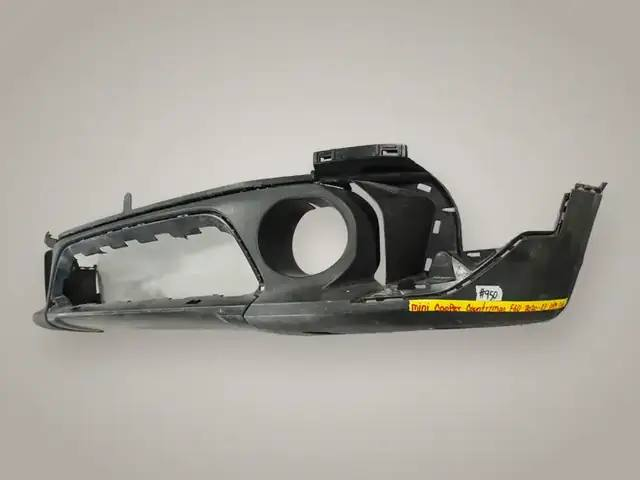

Piezas de carrocería para Mini Cooper Countryman
8 piezas disponibles hoy para Mini Cooper Countryman, cada una con su foto y su código: defensas delanteras (3), defensas traseras inferiores (2), parrillas (1), tapas de baúl (1). Dinos el año de tu carro y te confirmamos si le sirve.
- Garantía de 3 días
- Foto real de cada pieza
- Efectivo, Yappy o ACH
- Lunes a sábado, 8:00 a. m. a 5:00 p. m.
Defensas delanteras para Mini Cooper Countryman 3
 929Cooper Countryman F602017-19 · original
929Cooper Countryman F602017-19 · original 930Cooper Countryman2011-16 · original
930Cooper Countryman2011-16 · original
950Cooper Countryman F602020-23 · original DTI031Cooper Countryman
DTI031Cooper Countryman DTI036Cooper Countryman
DTI036Cooper Countryman TB013Cooper Countryman
TB013Cooper Countryman R009Cooper Countryman
R009Cooper Countryman